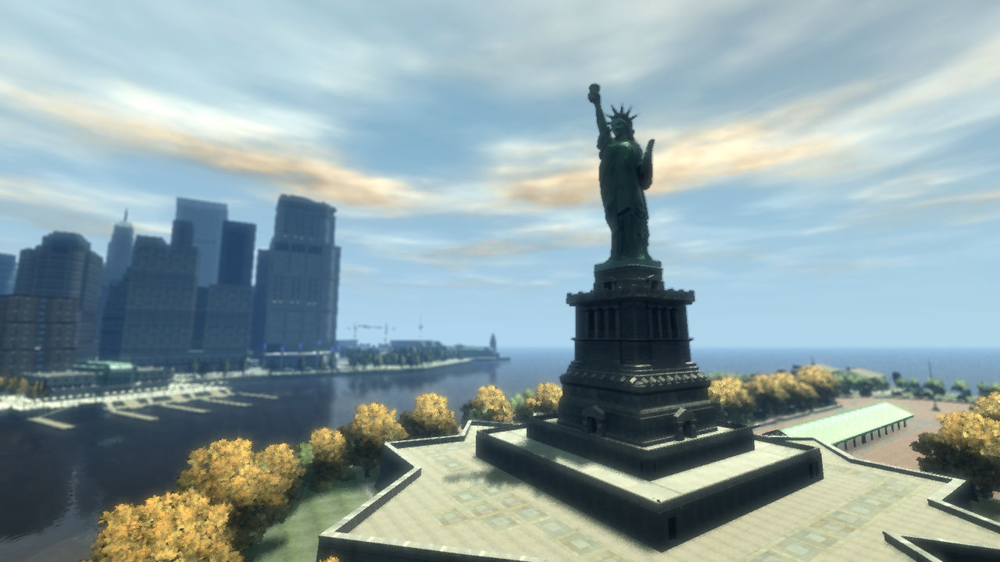
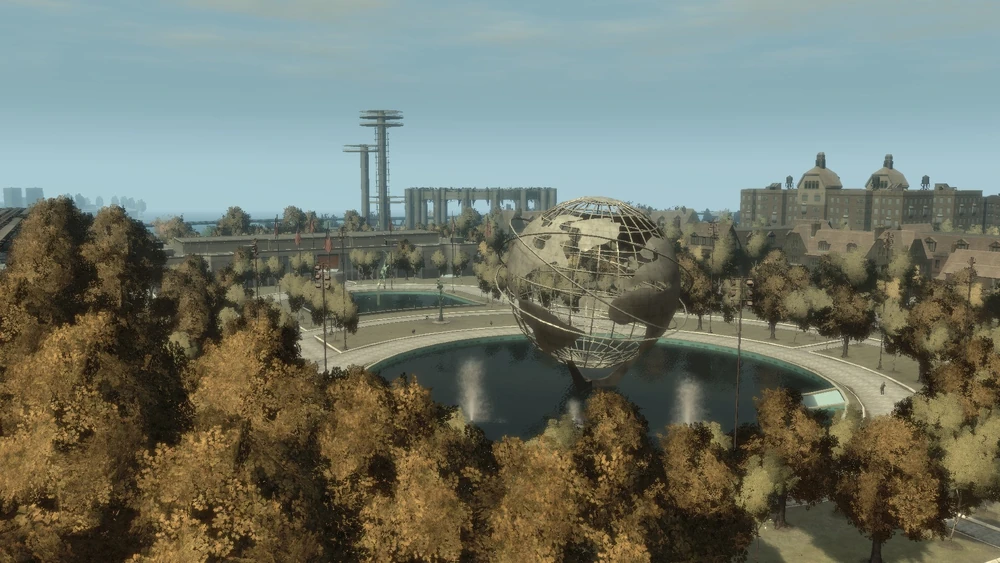

Bienvenue à
Liberty City
Liberty city est une ville majeure située dans l' État de la Liberté qui apparaît dans GTA V. Cette ville est une reproduction de New York, elle contient quatre des cinq arrondissement de New York.

Liberty City comporte plusieurs monuments inspirés de New York, comme par exemple la célèbre "Statue de la
liberté" que Rockstar Game a remplacé par "Statue of hapiness" ou "Statue du bonheur" en francais. C'est
également la plus grande zone rurale de la série GTA.

On peut aussi retrouver "Flushing Meadows" qui s'appelle simplement "Meadows Park" dans GTA V.